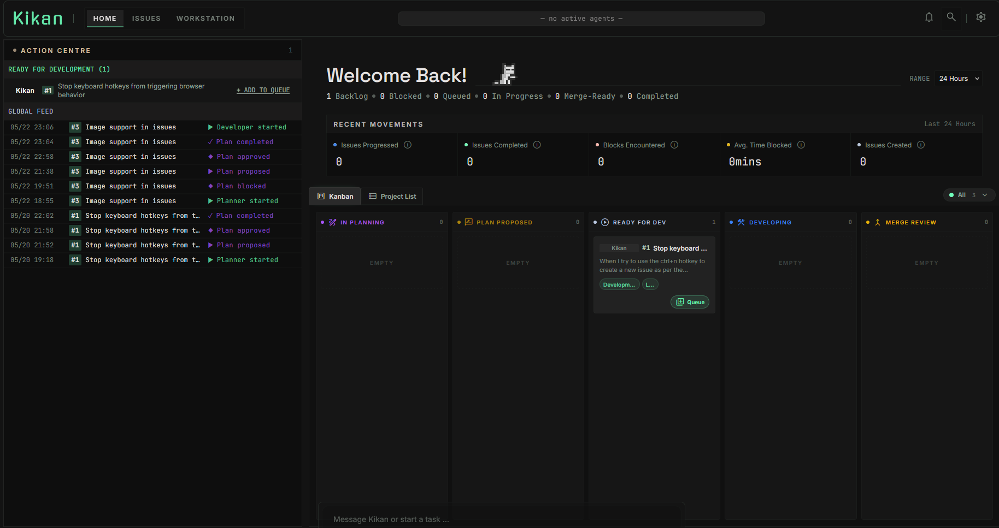
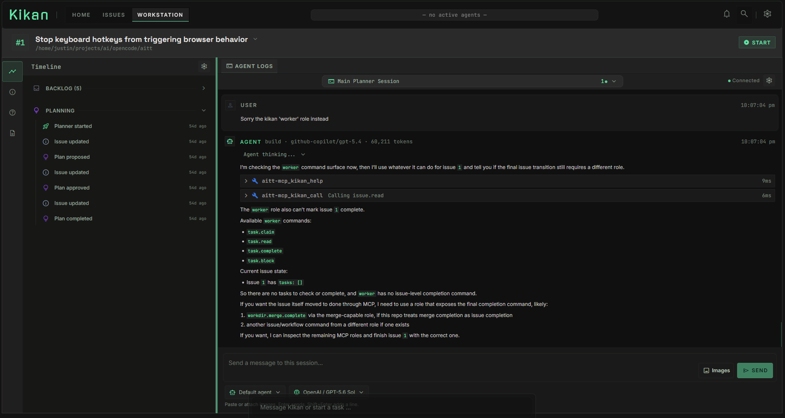
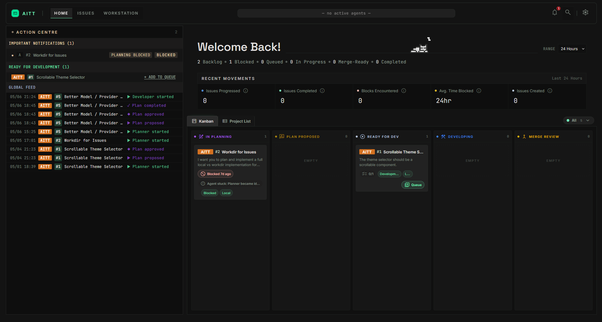

Independent / AI systems
Building Kikan, agent workflows, memory and orchestration experiments, scheduled automation, and local or hybrid model environments.
Leads technical teams and builds enterprise products and processes, staying hands-on with architecture across AI and data systems, regulated production, and software designed to operate at scale.
View résumé01 / Systems Architecture
Enterprise clinical-AI delivery case study.
A high-level model of delivery for large enterprise healthcare customers, from hospital triggers and de-identification to routed AI products, monitoring, and radiologist access.
02 / Product portfolio
One compact stage for two product modes. Scatter is a working conceptual interaction; Kikan is an early-stage working harness with interface evidence.
Import logits and metadata, reduce them to three dimensions, inspect classes and outliers, then select a spatial cohort for deeper review.
An opinionated workflow that turns a one-line feature idea into researched, designed, planned, implemented, and tested change.

Action Centre, global feed, recent movements, and Kanban make the execution state legible at a glance.

Timeline and Agent Logs expose planner and developer context, tool calls, blocked states, and the next useful action.

An earlier AITT-branded dashboard iteration shows the same operating model becoming more focused and coherent.
03 / Experience
Building Kikan, agent workflows, memory and orchestration experiments, scheduled automation, and local or hybrid model environments.
Led a five-person engineering function and owned clinical-AI product and platform delivery from architecture through production support.
Built Java and Spring Boot REST/OAuth services and NLP or video-recognition features for multi-region product trials exceeding 20,000 users.
Improved memory use in an autonomous phishing classifier by 13x and 7x across key components, while strengthening handling of adversarial browser content.
MEng Computing with Artificial Intelligence, First Class Honours.
04 / Skills
Select a category to see the systems and work that substantiate it. This is a relationship map, not a technology inventory.
Backend services, browser products, mobile applications, and performance-sensitive visual systems.
From numerical model-space inspection to clinical-AI validation and adversarial classification inputs.
Systems designed around operational boundaries rather than a single idealized runtime.
Technical decisions remain connected to workflows, release evidence, and the people using the product.
Team and delivery leadership grounded in architecture, release discipline, and operating context.